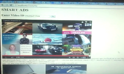

About me
Born and raised in Bangalore, India. Now living in Los Angeles. I am currently pursuing my PhD in the Computation and Neural Systems (CNS) program at Caltech in the lab of Professor Michael Dickinson. I graduated (BS) with a degree in computer science and engineering from PES University, Bangalore and subsequently worked as a research assistant at Brown University in the lab of Professor Thomas Serre. In the Dickinson lab, I am currently working on flight and gaze stabilization in fruit flies. This involves a combination of modifying/adding electronic components to the experimental setup, running experiments with different genetic fly lines, and writing code to analyze data. I am also working on a 3D fly head tracker using machine learning and computer vision tools. I have worked on many projects involving the application of machine learning and computer vision - ranging from navigational assistive technology for the visually impaired, detection and volume quantification of piles of garbage, behavioral monitoring of animals such as mice and zebrafish, detection tracking and counting of ants at ant nests etc. I regard these computational techniques as useful tools to obtain insight into some natural phenomenon. Since coming to Caltech and having the opportunity to work with animals such as fruit flies, ants and preying mantises (current side project), I have found my interests shift strongly towards neuroethology. I find insects, with their ingenius optimizations and strategies, to be fascinating and great model systems to study. I would love to further explore the amazing world of animal behavior and evolutionary strategies. I am deeply sadened by the rapid rates of decline in insect and animal populations due to anthropogenic causes. I find myself reading, listening to podcasts and watch documentaries about the same most of the time. Although biodiversity loss is just one of the many prongs of negative human impact on the planet, it is a cause I care deeply about. Moving forward I would love nothing more than to explore opportunities in this area, ideally with some field work involved, using the skills that I have gained and acquired over the years. Below are some of the projects that I have worked on in the past.
Diverse food-sensing neurons trigger idiothetic local search in drosophila
Dickinson Lab, Caltech

Optogenetically induced local search behavior in Drosophila. Worked on experiments, data collection and analysis of behavior on spherical treadmill.
Neural computing on a raspberry pi: Applications to zebrafish behavior monitoring
Serre Lab, Brown University
Inexpensive hardware plus software for accurate zebrafish behavior monitoring (tracking plus key point detection) using machine learning running on a raspberry pi plus intel movidius stick. Worked on the computer vision side of the project.
Using Computational Analysis of Behavior To Discover Developmental Change In Memory-Guided Attention Mechanisms In Childhood
Serre Lab, Brown University

Tested 4-9.5 year old children on a naturalistic memory-guided attention visual search task. Used modern computer vision techniques to detect objects from eye tracker data and computed saliency information in order to compare strategies and performance across age.
Learning to predict action potentials end-to-end from calcium imaging data
Serre Lab, Brown University

Detection of action potentials from raw calcium images using gated recuurent units in order to avoid manual preprocessing steps for calculating the flourescence signal.
Learning 3D shape
Serre Lab, Brown University

Learning 3D shape information using state of the art convolutional neural networks, to build a more like human like feature representation for classification of images. Synthetically rendered images of different poses, backgrounds and lighting conditions using Blender. Trained fully convolutional networks like FCN-8 and SegNet for combined training of surface normal prediction and classification. Used visualization tools like Deep-Vis toolbox for deconvolution and activation maximization. Compared the feature representations learnt using bipartite semi-matching.
Clicktionary
Serre Lab, Brown University
Comparison of features used by humans, and those used by Deep Convolutional Networks (DCNs), for object recognition. Created a web tool where a user reveals parts of an image until another user guess the category correctly. As a result, we compared these realization maps to ones from DCNs, found using LRP. We found that there was a very weak correlation between the same hence showing that humans and DCNs use different features for object recognition. We have published our findings in a workshop paper in ICCV 2017.
Thematic Segmentation of content using Deep Learning and Contextual Cues.
Sap Labs, Bangalore, India

Semantic segmentation of video and other content, into thematic chunks, using RNNs and contextual cues.
Volume estimation of Garbage
Centre for Cloud Computing and Big Data, PESIT

This project is aimed at addressing one of the biggest issues faced in our country, garbage estimation. We use the computer vision techniques to estimate the volume of a mound of garbage using multiple images from a mobile phone crowdsourced app. There are three steps involved in this problem, segmentation of the garbage, 3D reconstruction, and volume estimation. For segmentation we have compared 3 methods, sliding window with edge thresholding, sliding window with feedforward neural networks, and bounding box segmentation using Convolutional Neural Networks. For the 3D reconstruction, we have used Structure from Motion (SfM). For volume estimation we have used ball pivot method. We were able to achieve an accuracy of 85%. Our paper was accepted at ICVGIP 2016, India's premier computer vision conference.
Smart Detection & Visualization of uncollected Garbage
Centre for Cloud Computing and Big Data, PESIT
An end to end pipeline to assist the municipal committees of any city, to better tackle the problem of uncollected garbage distribution. This work was done in collaboration with an NGO, 'Jaanagraha'. We have used a Fast RCNN to detect uncollected garbage in an image. We then classify the garbage into construction debris / organic waste. We plot the distribution of garbage on a spatio temporal heat map of the city. We assign every dump a priority, based on the places of interest near by. We have also implemented a novel before - after spot fix detection system using deep learning, by comparing the fc7 features on a network trained on the MIT Places dataset. This gave us better results than SIFT feature matching. We are currently working on a journal paper.
NAVI - Navigation Aid for the Visually impaired
Mad Street Den Systems, Chennai

Developed a navigational tool for the visually impaired which runs on a smart-phone, using computer vision algorithms and machine learning. Components involved were real time video stabilization using Kalman filters, depth estimation using optical flow, segmentation of approaching obstacle, classification of the obstacle using Neural Networks with Restricted Boltzmann Machine pre-training, and face recognition using FisherFaces. The obstacle detection from a single monocular camera, was inspired from a monocular depth cue used by our brains called motion parallax. It uses the fact that objects closer to us move at a faster rate than objects away from us. We used the same approach while tracking feature points on consquetive frames. Our paper was accepted and presented at ICCCA 2016, and is to appear in IEEE Xplore Digital Library
Real time video content based contextual ads
SAP What the Hack 2.0

Developed a framework which successfully recommends the most relevant advertisements for users in real time, while watching videos. This would improve the relevance of ads hence improving economy. Used Google Speech to Text API, and then Alchemy API to parse the text and retrieve brand names. Then used a scrapper to fetch and display relevant ads.
Assistive Vision Simulator
MIT - RedX "Engineering the Eye", Hyderabad

Worked under the supervision of Ramesh Raskar, and guidance of various members of the MIT Media Lab and also under leading ophthalmologists from around the world as part of a seven day workshop. Created a simulator in Unity integrated with the Oculus Rift to test for, and to figure out the best feedback mechanism that should be given to a visually impaired person, through a navigation tool. Created a maze in Unity and integrated it with Oculus rift and Oculus Audio SDK to recreate a depth map in terms of sound intensities. Also made a vibrating headset to provide tactile feedback. We were also able to stream frames from unity in real time using sockets to OpenCV and perform a face detection in real time. We found that with repeated trials, people were able to navigate a maze only using sound source localization and sound intensities.
Pothole detection using Machine Learning
Inmobi Hackday

Made a crowd sourced Android App which would record accelerometer readings and GPS values as a rider travelled. Features are then extracted using a sliding overlapping window, and passed to a SVM to predict the occurrence of potholes or accidents. Using previous data, potholes are ranked in order of danger posed and this data is visualized on a real time heat map. This project was selected in the top 20 out of 350 teams in Inmobi Hack Day.
Handwritting recognition using neural networks
Algorithms mini-project, PESIT
Implemented a three layer feedforward neural network including mini batch stochastic gradient descent and backpropagation algorithms. Implemented in Python. No external libraries except for NumPy were used. Achieved an accuracy rate of 96.4\% on MNIST dataset and a global rank of 143 on Kaggle’s handwriting recognition problem.
Relief drone with computer vision
Microsoft innovation lab, PESIT

Made a quadcopter with a camera mounted on it which would be controllable through the internet and would count the number of people in an area to help relief service providers. Worked on different methods of communication between Raspberry Pi and Arduino. Worked on communicating with the Pi using WebSockets and made a Windows Phone App as a flight controller. Worked with people detection algorithms in OpenCV.
Hands free cake book
Microsoft bootcamp, PESIT
Published a Windows Store App which uses hand gesture recognition to allow the user to navigate through steps of baking a cake. This is done so that the user would not have to touch the laptop/tablet with his/her messy cake hands while baking. The app currently has 5,000 plus downloads from 120 different countries.
Web history based semantic app recommender
Inmobi Hackday
Developed an android app recommender which recommends an app based on the user’s web browsing history and not based on the app's he has downloaded so far, like is currently done. Three layers of filtering are done to recommend the most useful app to a user based on his present interests(based on content of most visited sites). We get the content tags of a website from SimilarWeb API and then scrape the play store to recommend an app which is most similar to the content(most number of similar tags).Extensively used Java, JSoup for parsing, JDBC. This project was selected in the top 33 of Inmobi Hack Day.
SenseMakers
MIT Design Innovation Workshop, Gujarat
Worked under the guidance of Joe Paradiso and various members from the MIT media labs. Build a tool in order to spread awareness and visualize data, in an impactful way. A social issue would be compared to an event or an entity, which is local to the user. By providing comparisons in the user's location, the user will be able to relate to the numbers in a better way. The scale of the problem would 'make sense' to the user.
Wii Remote using Mobile phone
Independent project for fun
Developed a Windows Phone App, which reads and sends accelerometer readings in real time using sockets. Made a server in NodeJS for the socket communication. The values are read and analysed in Java and accordingly, a keypress event is fired on the laptop using Java’s Robot Class. The user can hence play games like using his phone like how he would play using a Nintendo Wii, with no cost incurred.